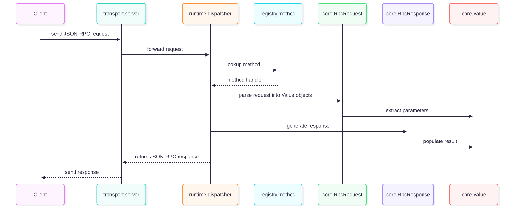
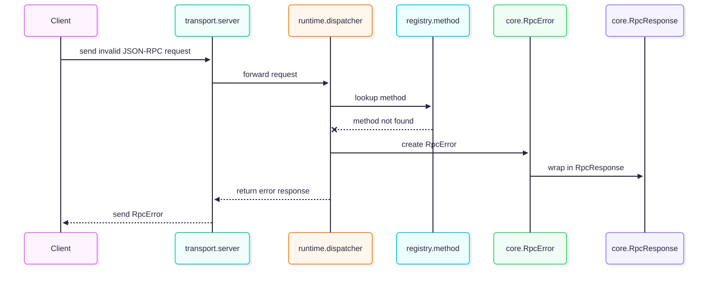
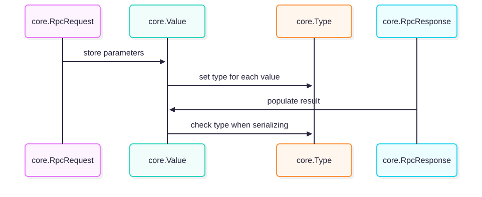
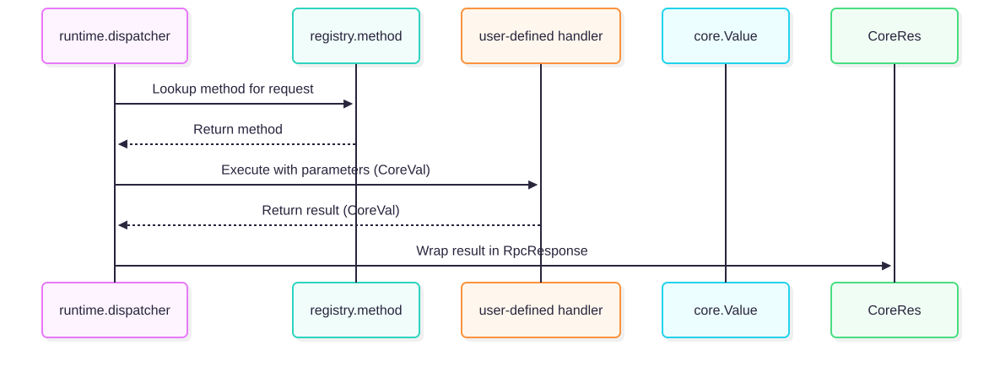

|
SKITR v0.2.0
|
|
SKITR v0.2.0
|
SKITR - Structured Kernel for Interprocess Transport (RPC) - is a lightweight C++ framework implementing a JSON-RPC 2.0 server and client architecture.
The system is structured into 5 main containers:
Type - Enumerates JSON value types (string, number, boolean, array, object).Value - Represents any JSON value.RpcRequest / RpcResponse - Structures for JSON-RPC requests and responses.RpcError - Represents JSON-RPC error details.json_protocol uses nlohmann::json to encode/decode JSON-RPC messages.method_registry ensures thread-safe dispatch of method calls.dispatcher consumes requests, invokes registry methods, and prepares responses.server handles TCP connections and passes messages to the runtime.asio – Cross-platform networking and I/O.nlohmann::json – JSON serialization/deserialization.core, protocol, registry, runtime, and transport.method_registry uses mutexes to ensure safe concurrent access.


